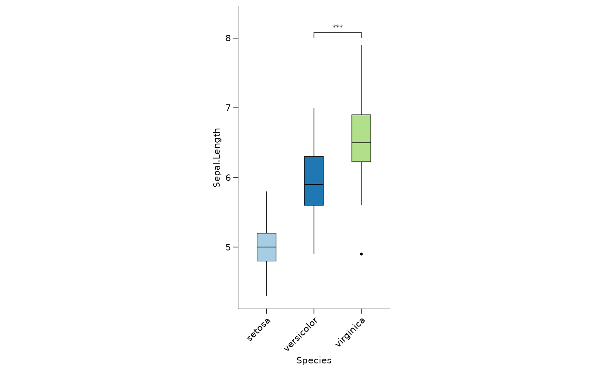
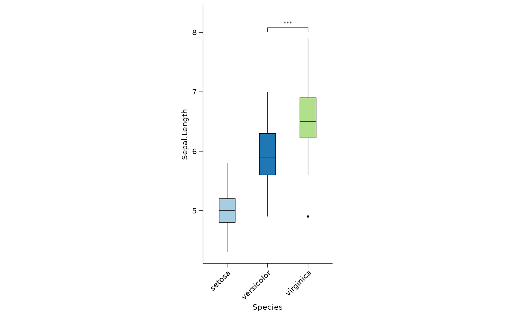

This function creates a grouped boxplot with optional jitter points. It takes in a data frame, x variable, y variable, fill variable, color variable, and various other arguments to customize the plot.
Usage
cat_boxplot(
data,
x,
y,
fill = NULL,
color = NULL,
x_order = NULL,
y_order = NULL,
width = 0.4,
fatten = 1,
outlier_colour = NULL,
outlier_color = NULL,
outlier_fill = NULL,
outlier_shape = 19,
outlier_size = 0.5,
outlier_stroke = 0.5,
outlier_alpha = NULL,
notch = FALSE,
notchwidth = 0.5,
varwidth = FALSE,
na_rm = FALSE,
orientation = NA,
show_legend = FALSE,
add_jitter = FALSE,
jitter_width = 0.6,
jitter_size = 0.5,
jitter_color = NULL,
plot_title = waiver(),
x_axis_title = waiver(),
y_axis_title = waiver(),
x_text_angle = NULL,
y_text_angle = NULL,
legend_title = waiver(),
font_size = 8,
linewidth = 0.5,
aspect_ratio = NULL,
frame = "closed",
show_panel_grid = "both_not",
show_title = "both",
show_text = "both",
text_italic = "both_not",
show_ticks = "both",
ticks_length = 4,
legend_position = "right",
legend_direction = NULL,
comparisons = NULL,
test = "wilcox.test",
step_increase = 0.1,
map_signif_level = TRUE
)Arguments
- data
A data frame to be modified.
- x
A column name of data frame to be adjusted factor levels.
- y
A column name of data frame to be adjusted factor levels.
- fill
A character string representing the color to use for the box plot fill
- color
A character string representing the color to use for the box plot outline
- x_order
Optional. A character vector specifying how to adjust the factor levels of the x column. It can be one of the following: "desc" (arrange in descending order according to the mean value), "asc" (arrange in ascending order according to the mean value), a vector of factor levels in the desired order, or NULL (do not change).
- y_order
Optional. A character vector specifying how to adjust the factor levels of the y column. It can be one of the following: "desc" (arrange in descending order according to the mean value), "asc" (arrange in ascending order according to the mean value), a vector of factor levels in the desired order, or NULL (do not change).
- width
A numeric value indicating the width of each boxplot. Defaults to 0.4.
- fatten
A numeric value indicating the amount to increase the width of each boxplot relative to the default. Defaults to 1.
- outlier_colour
Deprecated. Use outlier_color instead.
- outlier_color
A character string or symbol indicating the color of the outlier points. Defaults to NULL.
- outlier_fill
A character string or symbol indicating the fill color of the outlier points. Defaults to NULL.
- outlier_shape
An integer indicating the shape of the outlier points. Defaults to 19.
- outlier_size
A numeric value indicating the size of the outlier points. Defaults to 0.5.
- outlier_stroke
A numeric value indicating the stroke width of the outlier points. Defaults to 0.5.
- outlier_alpha
A numeric value indicating the alpha transparency of the outlier points. Defaults to NULL.
- notch
A logical value indicating whether to display notches around the median. Defaults to FALSE.
- notchwidth
A numeric value indicating the width of the notches. Defaults to 0.5.
- varwidth
A logical value indicating whether to adjust the width of each boxplot based on the number of observations. Defaults to FALSE.
- na_rm
A logical value indicating whether to remove missing values. Defaults to FALSE.
- orientation
A character string indicating whether the plot should be horizontal ("horizontal") or vertical ("vertical"). Defaults to NA.
- show_legend
A logical value indicating whether to show the legend. Defaults to FALSE.
- add_jitter
A logical value indicating whether to add jitter points to the plot. Defaults to FALSE.
- jitter_width
A numeric value indicating the width of the jitter points. Defaults to 0.6.
- jitter_size
A numeric value indicating the size of the jitter points. Defaults to 0.5.
- jitter_color
A character string or symbol indicating the variable to use for color of the jitter points. Defaults to NULL.
- plot_title
A character string representing the title of the plot
- x_axis_title
A character string representing the title of the x-axis
- y_axis_title
A character string representing the title of the y-axis
- x_text_angle
An integer representing the angle of the x-axis text labels
- y_text_angle
An integer representing the angle of the y-axis text labels
- legend_title
A character string representing the title of the plot legend
- font_size
Numeric, font size (default: 8)
- linewidth
Numeric, line width (default: 0.5)
- aspect_ratio
Numeric, aspect ratio of the plot (default: NULL)
- frame
Character, frame type, "closed" or "open" (default: "closed")
- show_panel_grid
Character, panel grid visibility (default: "both_not")
- show_title
Character, axis title visibility (default: "both")
- show_text
Character, axis text visibility (default: "both")
- text_italic
Character, axis text italicization (default: "both_not")
- show_ticks
Character, axis tick visibility (default: "both")
- ticks_length
Numeric, tick length (default: 4)
- legend_position
Character, position of legend (default: "right")
- legend_direction
Character, direction of legend (default: NULL)
- comparisons
A list of comparison groups for ggsignif
- test
A character string representing the statistical test to use for ggsignif
- step_increase
A numeric value representing the step increase for ggsignif
- map_signif_level
A logical value representing whether to map the significance level for ggsignif
Examples
library(catplot)
library(ggplot2)
library(dplyr)
#>
#> Attaching package: ‘dplyr’
#> The following objects are masked from ‘package:stats’:
#>
#> filter, lag
#> The following objects are masked from ‘package:base’:
#>
#> intersect, setdiff, setequal, union
data("iris")
iris %>%
mutate(group = if_else(log2(Petal.Length + 1) > 1.5,
"high", "low"
)) %>%
cat_boxplot(
x = Species,
y = log2(Petal.Width + 1),
fill = group,
aspect_ratio = 1,
show_panel_grid = "both",
legend_title = "ee",
legend_position = "top",
x_text_angle = 45
)
 p <- iris %>%
cat_boxplot(
x = Species,
y = Sepal.Length,
aspect_ratio = 2,
frame = "open",
x_text_angle = 45,
comparisons = list(c("versicolor", "virginica"))
) + scale_fill_brewer(palette = "Paired")
p

p <- iris %>%
cat_boxplot(
x = Species,
y = Sepal.Length,
aspect_ratio = 2,
frame = "open",
x_text_angle = 45,
comparisons = list(c("versicolor", "virginica"))
) + scale_fill_brewer(palette = "Paired")
p
